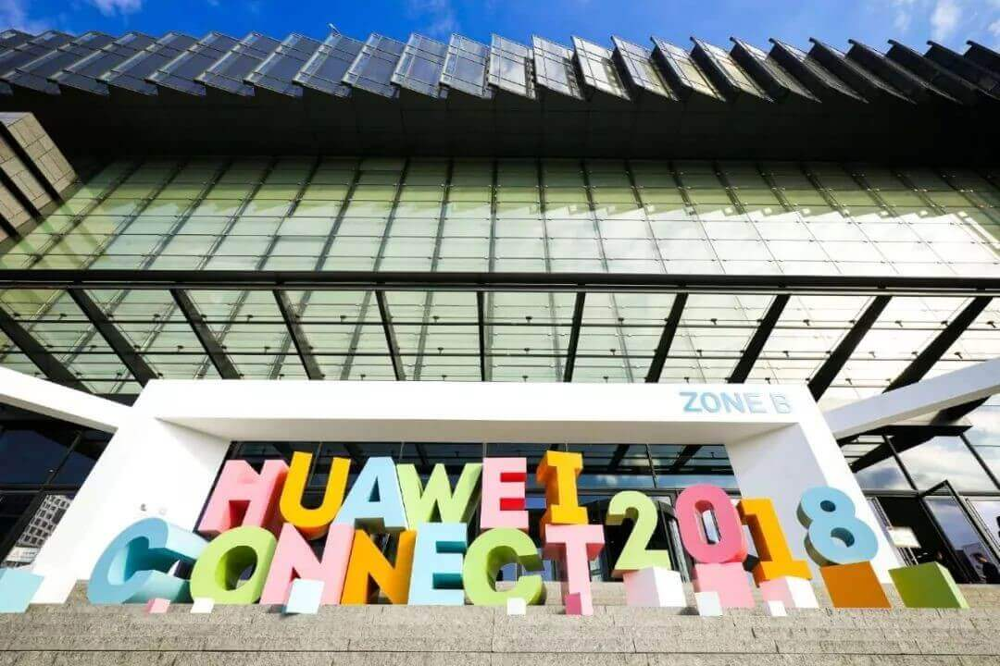
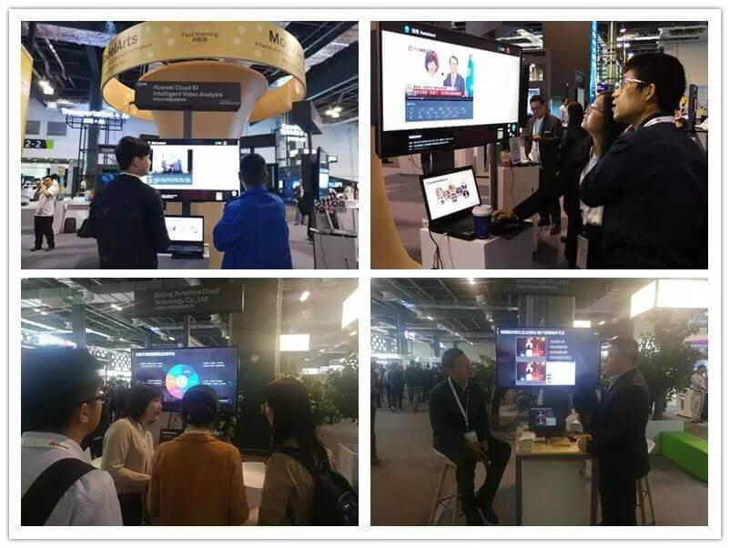
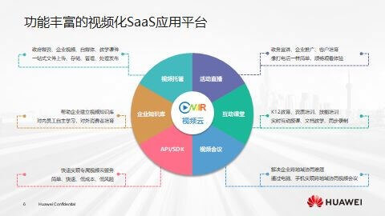

+智能见未来丨阳光云视应邀出席华为HC大会，助力视频生产能力变革
2018年10月10日-12日，一年一度的华为HC大会(HUAWEI CONNECT 2018）在上海世博中心举行。吸引了来自全球150多个国家的行业领袖和学术专家在这里碰撞思想，共享技术的生态盛宴。作为华为领先级合作伙伴，阳光云视以“智驭未来，视享无界”为展览主题，携视频云服务及“黑科技”视频分析产品亮相大会，吸引了大批嘉宾关注。


ONAIR视频云拥有广播级视音频核心技术，提供视频托管、活动直播、企业知识库、互动课堂、视频会议、监控直播、API/SDK等一站式视频云服务，适用于政府部门、企业应用、互联网行业、教育行业、金融行业、监控行业等不同行业多类型场景的应用需求，让视频应用更轻松！

视频内容分析基于领先的AI技术，对视频进行智能分析。集合自然语言学习、智能拆条、OCR字幕识别、政治人物识别、语音识别等多种AI技术，获取视频内容标签，提高搜索准确度。使用便捷，处理高效，满足用户一站式视频内容分析服务。
除了展会现场的ONAIR视频云平台及智能分析产品介绍演示之外，视频云总经理曹飞先生受邀在SAAS分论坛中发表演讲，以《云际飞扬 视界无限》为题，为我们带来了精彩的发言，深入浅出的介绍了ONAIR视频云，聚焦视频应用的多样化场景：政府部门、企业应用、互联网、教育行业、金融行业、监控行业，为其提供SaaS & API 服务。
+智能 见未来，云视作为领先的视频云技术服务商，致力于推动视频生产能力的变革，让视频应用更轻松。云视愿与各方携手，一同开启无限视界，共见+AI时代的美好未来！